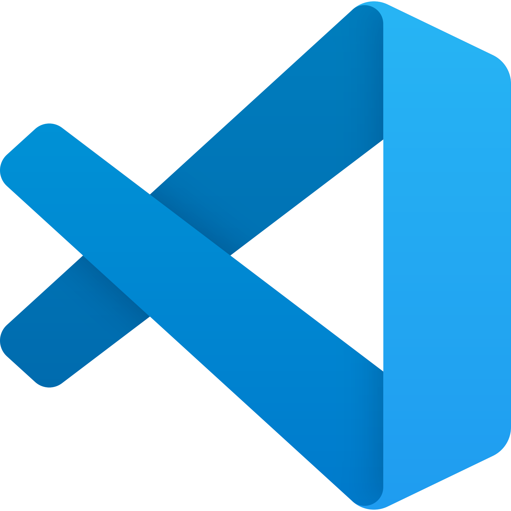

Dependancy
This repository relies on .NET 9.0 and is required for easy-setup.
You can still set up stuff manually but is recomended to just use the provided program once.
Setup
git clone https://github.com/Mikk155/Sven-Co-op.git
cd Sven-Co-op
cd scripts
cd setup
dotnet run
 Visual Studio Code recomended extensions
| Name | Download | Description |
|---|---|---|
| Code Runner | Code Runner | Use to have a way to "Run" angelscript code. It will just copy over any required asset from a plugin/script to your sven coop installation. |
| Angelscript language server | Angelscript Language Server | AngelScript language server (Wip, please report issues on Github) |